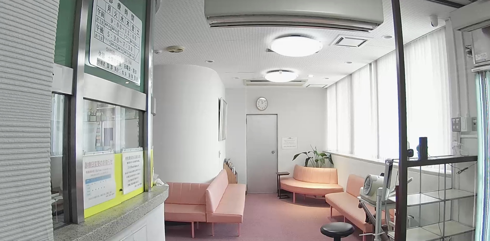

ごあいさつ
当院は、地域の皆様に寄り添う身近な医療機関として、日々の健康管理から慢性疾患の診療まで、外来診療はもとより一人ひとりの生活背景を大切にした医療を提供しています。
また、通院が難しくなった方には2016年から訪問診療も行っています。
医師が定期的にご自宅や施設へお伺いし、患者さまやご家族に寄り添いながら、
住み慣れた場所で安心して生活を続けられるよう支援しています。
これからも地域の皆様に信頼される「かかりつけ医」として、外来から在宅医療まで
切れ目のない医療を提供し、地域医療に貢献してまいります。

診療・業務内容
外来診療
⚫︎生活習慣病（高血圧・糖尿病・脂質異常症）などの慢性疾患の管理
⚫︎各種健診
◇名古屋市委託検診 特定検診、肺がん検診、胃がん検診、大腸がん検診、前立腺がん検診
◇会社検診
⚫︎発熱外来
感染症予防対策のため、空間的・時間的・動線的な隔離を行わさせていただいております。
⚫︎自費診療
◇ 各種予防接種
基本的には予約をいただきます。
◇肥満症に対する治療
ウゴービ®（セマグルチド）による治療を行っています。
治療の適応、費用、効果、副作用等については診察時にご説明します。
◇ 各種点滴療養
メニューは準備中にてご相談ください
訪問診療
在宅療養支援診療所として、訪問看護ステーション等の
多職種と連携し、24時間の連絡・対応体制を整えています。
基本的には月曜日から木曜日の午前診と午後診の間での診療時間を設定します。
往診
外来診療、訪問診療ともに往診対応いたします。
オンライン診療
予約制となります。初診は基本的に来院での診療とさせていただきます。
ただし、安定している場合でも4か月に一度は来院での診察を受けていただきます。
§ 園医
§ 障害児施設委託医
§ 産業医
等、各種お問い合わせは外来診療時間にお電話ください
検査機器
当院では、診療内容に応じて以下の検査機器を備えています。
心電図検査
心臓の電気的な活動を記録し、不整脈などの心臓の状態を調べます。
超音波診断装置
超音波を利用して、身体への負担が少ない検査を行います。
・腹部超音波検査
・心臓超音波検査
・頸部超音波検査
X線撮影装置
胸部や腹部の撮影のほか、骨の状態や胃の検査にも対応しています。
・胸部X線検査
・腹部X線検査
・骨塩定量検査
・胃X線検査（バリウム検査・胃透視）
お知らせ
診療時間
| 月 | 火 | 水 | 木 | 金 | 土 | |
|---|---|---|---|---|---|---|
| 🏥 午前診 9:00〜12:00 |
― | |||||
| 🏠 訪問診療 13:30〜17:00 |
― | ― | ||||
| 🏥 午後診 17:30〜19:30 |
― |
※ オンライン診療は予約制となります
※ 外来診療の受付時間
診療開始15分前から診療時間終了30分前まで
所在地・アクセス
所在地
〒467-0825
愛知県名古屋市瑞穂区
柳ヶ枝町1-34 1階
公共交通機関
市バス
「名鉄堀田」停留所
2番のりばより徒歩1分
3番のりばより徒歩4分
名鉄
名鉄名古屋本線「堀田駅」より
徒歩4分
地下鉄
名古屋市営地下鉄名城線
「堀田駅」2番出入口より
徒歩8分
お車でお越しの方
名古屋高速「堀田出口」より約1分
※堀田出口は右側車線から降ります。
出口を降りて直進し、
「三菱UFJ銀行」の交差点を左折
してすぐです。
連絡先
TEL：052-881-0876
FAX：052-881-5833